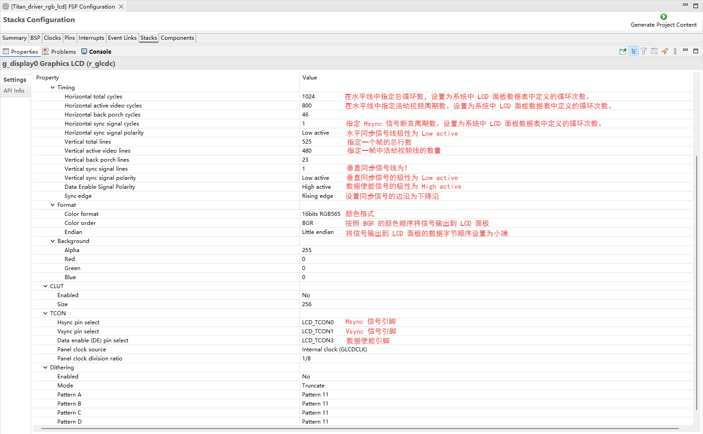
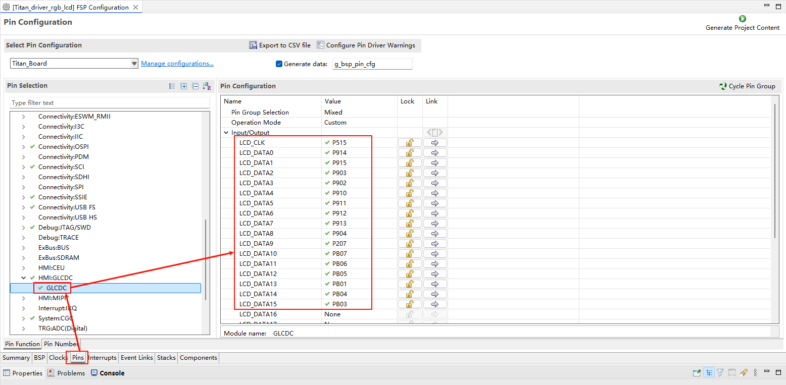
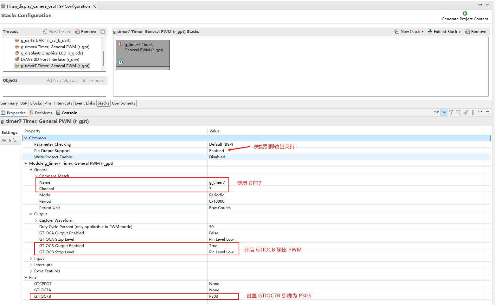

RGB LCD Example Guide
English | Chinese
Introduction
This example demonstrates how to use the GLCDC module of the RA8 series MCU together with RT-Thread’s LCD driver framework on the Titan Board to drive an RGB LCD screen, enabling image display and interface updates. This document provides a detailed overview of RA8 GLCDC peripheral features and the RT-Thread LCD driver framework, along with example configurations and usage methods.
RA8 Series GLCDC Module
1. Overview
The GLCDC (Graphics LCD Controller) is a high-performance graphics controller integrated in RA8 series MCUs, specifically designed to drive TFT/RGB LCD screens. It supports various resolutions, color formats, and graphics processing functions. Combined with RT-Thread’s LCD driver framework, it provides a unified interface for screen initialization, refresh, graphics rendering, and DMA-accelerated operations.
The RA8 GLCDC enables image output from either internal MCU memory or external frame buffers to RGB/LCD displays. Key features include:
Frame buffer control: Supports multiple frame buffers for page switching or double-buffered display
Color format support: RGB565, RGB888, ARGB8888, etc.
Graphics processing: Background layers, text/graphics composition, alpha blending, palette mapping
Synchronization signal generation: HSYNC, VSYNC, DE (Data Enable)
DMA support: High-speed data transfer, reducing CPU load
Interrupt functionality: Frame-end and line-end interrupts
2. Module Architecture
The RA8 GLCDC module mainly consists of the following submodules:
Layer Composition Unit
Supports multiple layer stacking
Provides alpha blending, transparency control, and color keying
Allows rotation and flipping of layers
Frame Buffer Interface
Supports access to MCU internal SRAM or external memory
Provides single or double buffering to ensure continuous display
Works with DMA to automatically read image data
DMA Controller
Automatically transfers pixel data to the RGB output port
Configurable burst length to improve bandwidth utilization
Supports circular transfer, suitable for video or animation scenarios
Timing Generator
Automatically generates HSYNC, VSYNC, and DE signals
Supports TTL interface RGB timing
Polarity, sync width, and front/back porch timings are configurable
Interrupt and Event Controller
Provides frame-end and line-end interrupts
Can be used for page switching, dynamic drawing, or scrolling display
Supports interrupts triggered by DMA transfer completion
3. GLCDC Working Principle
Frame buffer read
GLCDC uses DMA to fetch image data from memory, supporting single or double buffering for continuous display.
Layer composition
Supports multiple layers such as background + foreground + icons/text
Provides alpha blending and palette mapping
Pixel timing output
Generates HSYNC/VSYNC/DE signals according to LCD interface requirements
Supports RGB parallel interface, TTL interface, or LVDS (depending on board implementation)
Interrupts and events
Frame-end interrupt (VBlank): Can be used to update the next frame
Line-end interrupt: Useful for scrolling displays or dynamic rendering
4. GLCDC Supported Features
Feature Category |
Description |
|---|---|
Resolution |
Up to 800×480 (depending on MCU model and clock) |
Color formats |
RGB565, RGB888, ARGB8888, etc. |
Multi-layer |
Background + foreground + icon layers, supports blending |
Frame buffer |
Single/double buffer mode, DMA improves performance |
Palette |
8/16-bit palette mapping for color conversion |
Sync signals |
HSYNC, VSYNC, DE, configurable polarity and timing |
DMA support |
Automatic memory transfer, CPU-free |
Interrupts |
Frame-end, line-end interrupts for synchronized refresh |
Rotation/Flip |
Supports 90°/180°/270° rotation and X/Y flipping |
RT-Thread LCD Driver Framework
RT-Thread provides a LCD driver framework, which abstracts the underlying controller and supports different screen types and MCU peripherals. Key interfaces include:
Main Interfaces
Function/Macro |
Purpose |
|---|---|
|
Find the LCD device handle |
|
Open the device and initialize the LCD hardware |
|
Control the LCD, e.g., update image, set backlight, read screen info |
|
Write pixel data to the LCD |
|
Read pixel data from the LCD (supported on some screens) |
|
Close the LCD device |
Hardware Description

FSP Configuration
HyperRAM Configuration
Create a
r_ospi_bstack：

Configuration
r_ospi_bstack：

Configuration HyperRAM pins：

RGB LCD Configuration
Create a
r_glcdcstack:

Configure interrupt callback and graph layer 1:

Configure Output、CLUT、TCON and Dithering:

Configure GLCDC pins:


LCD Backlight Configuration
Create a
r_gptstack:

Configure back light PWM output:

D/AVE 2D Configuration
Create a
r_drwstack:

RT-Thread Settings Configuration
Enable RGB565 LCD in RT-Thread Settings, using pwm7 output screen backlight.

Compilation & Download
RT-Thread Studio: In RT-Thread Studio’s package manager, download the Titan Board resource package, create a new project, and compile it.
After compilation, connect the development board’s USB-DBG interface to the PC and download the firmware to the development board.
Run Effect
After reset the development board, type lcd_test command in the terminal to run the brush program.